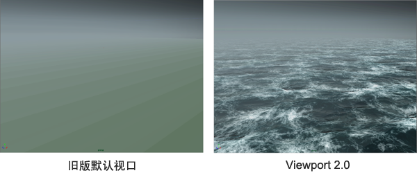

Viewport 2.0 替换了旧版视口（默认和高质量）并提高了性能，从而可以直接在 Maya 视口中查看高质量的照明和阴影、材质以及其他效果，无需进行渲染。
以下图像显示了将
“海洋着色器”(Ocean Shader)应用于平面时，旧版视口与新版视口之间的差异。

性能改进
Viewport 2.0 还包括旧版默认视口的以下性能改进：
- “GPU 实例化”可利用 GPU 缓存，因此如果一个 Maya 形状有多个实例（尤其在有大量实例时），并且所有实例都使用相同的材质，则它们使用硬件实例化进行渲染，以更快获得渲染结果。有关详细信息，请参见 Viewport 2.0 选项。
- “合并世界”通过结合静态对象的传统合并提高视口性能，尤其是在具有大量非变形对象的场景中。
请参见优化 Viewport 2.0。
质量改进
Viewport 2.0 对早期 Maya 视口的以下方面进行了改进：
- 预渲染可视化
- 支持复杂的着色网络、置换、法线贴图和凹凸贴图、灯光阴影、逐像素照明和环境光遮挡，可更好地实时了解渲染图像的外观。
- 实时预览
- 实时预览渐变、纹理文件属性调整和多平铺 UV 纹理。
- 颜色管理
- 颜色管理为您提供了场景线性工作流的优势，同时仍可在视口和“渲染视图”(Render View)中显示适用于您的显示的预览。美工人员可利用视口中的高级颜色管理功能查看流程早期应用的颜色场景，例如在动画播放预览中。此外，与旧版视口相比，默认情况下视口中的照明更自然且对比度更低。
- 置换预览
- 置换预览工作流已经过简化，可最大限度避免工作流中断。
- OSD 支持
- 可通过原生 OSD 3.1 预览自适应 OpenSubdiv 几何体的实际形状和曲面。
- 透明度
- 以高质量显示透明对象，且不会影响性能。有关透明度模式的详细信息，请参见 Viewport 2.0 选项。
- 雕刻
- 提高了雕刻高分辨率网格时的显示性能。
- Bifröst 和 XGen 支持
- 可对 Bifrost 和 XGen 交互式修饰提供全面的绘图和着色支持，实现更精确的渲染预览。
- 数据预加载
- Viewport 2.0 可预加载数据，以加快交互速度。启动时间有时会变慢，但交互性会有较大提高。
- 提高 GPU 内存利用率
- Viewport 2.0 可更好地利用您的图形硬件，完成更多任务并提高速度性能。随着显卡质量提高，视口的性能和交互性均得到了提高。
显卡 RAM 也是一个重要因素。有关硬件要求的信息，请参见管理 Viewport 2.0 的 GPU 内存。有关如何处理大型场景的提示，另请参见优化 Viewport 2.0。
API
借助 Viewport 2.0 API，您可以在自己的插件中充分利用 Viewport 2.0 性能改进的优势，并与各种视口效果和其他功能衔接。
此外，将自定义形状作为用户定义的形状节点 (MPxSurfaceShape) 进行实施且无需使用任何 Viewport 2.0 API 类的插件也会受益于性能改进。请参见
Maya 开发人员帮助。
Viewport 2.0 与旧版默认视口之间的差异
Viewport 2.0 支持所有常用的 Maya 工作流，在某些情况下，它具有不同的方法：
- 无着色器的对象
- 在 Viewport 2.0 中，未指定着色器的对象将着色为绿色显示在场景视图中。如果出现着色网络错误，则对象将在场景视图中显示为白色。如果该对象是 OpenSubdiv 对象，它将显示为白点。此视觉变化可警示缺少着色器。
- 在旧版视口中，无着色器的对象会显示为线框。
- 粒子不透明度属性
- 在 Viewport 2.0 中，无需使用“不透明度”(Opacity)属性即可查看“颜色积累”(Color Accum)的效果。但是，可将这两个属性结合使用来创建更加真实的辉光粒子效果；每个粒子的不透明度乘以“不透明度”(Opacity)值，然后将重叠粒子加在一起。可以降低“不透明度”(Opacity)值以防粒子过亮，从而产生更平滑的效果。
- 在旧版视口中，要查看“颜色积累”(Color Accum)效果，需要使用“不透明度”(Opacity)属性。
- PP 属性
- 在 Viewport 2.0 中，需要在 Hypershade 窗口中通过 outColor、outTransparency 或 outIncandescence 属性连接 particleSamplerInfo，才能连接 rgbPP、opacityPP 或 incandescencePP 属性。
- Windows 远程桌面
- 在 Viewport 2.0 中，通过 Windows 远程桌面访问 Maya 时，Maya 会自动将渲染引擎切换到 DirectX 11 模式。
- 删除着色节点
- 在 Viewport 2.0 中，如果删除对象的着色节点，则默认情况下对象将着色为绿色。要更改此默认颜色，可通过对象的形状节点“属性编辑器”(Attribute Editor)中“绘制覆盖”(Drawing Overrides)部分的“颜色”(Color)属性。
- 启用阴影
- 在场景中启用阴影时，Viewport 2.0 会提供阴影预览，不管为灯光选择的是“使用光线跟踪阴影”(Use Ray Trace Shadows)还是“使用深度贴图阴影”(Use Depth Map Shadows)。若要在 Viewport 2.0 中进行可视化时调整阴影的外观，请选择“使用深度贴图阴影”(Use Depth Map Shadows)，并调整其对应设置以在视口中查看效果。